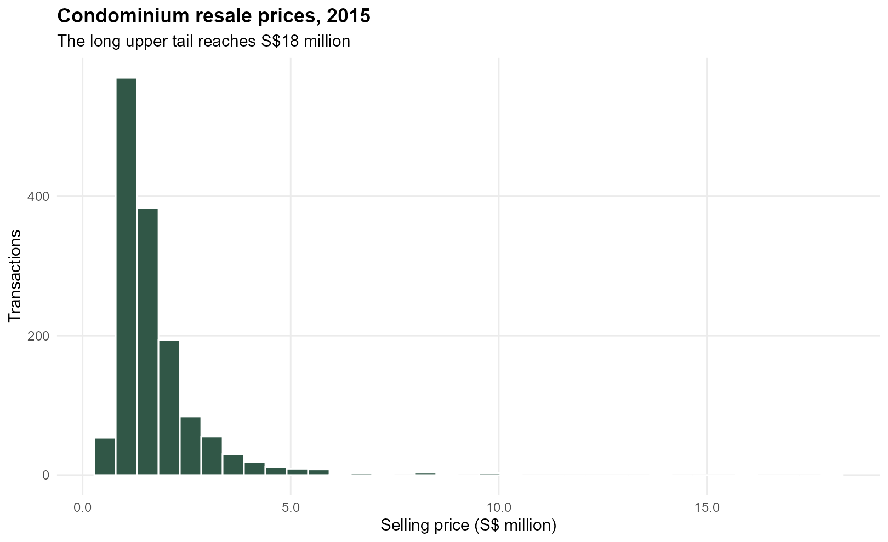
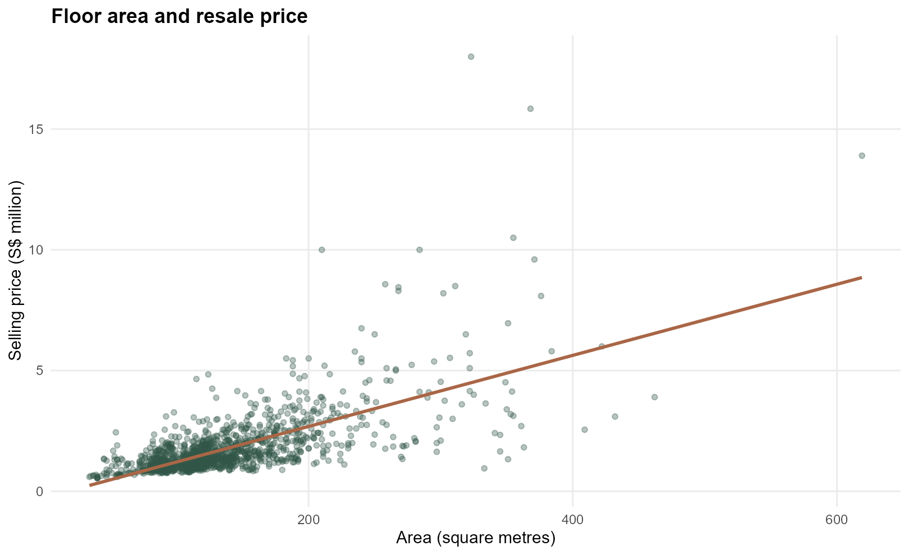
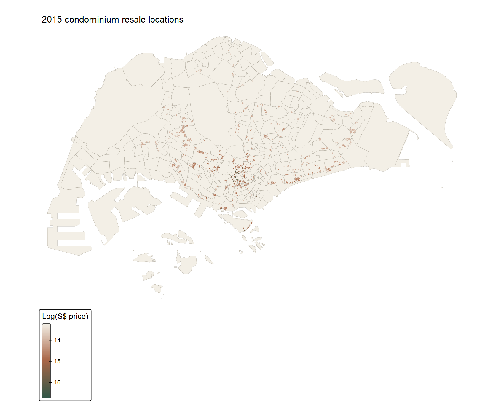
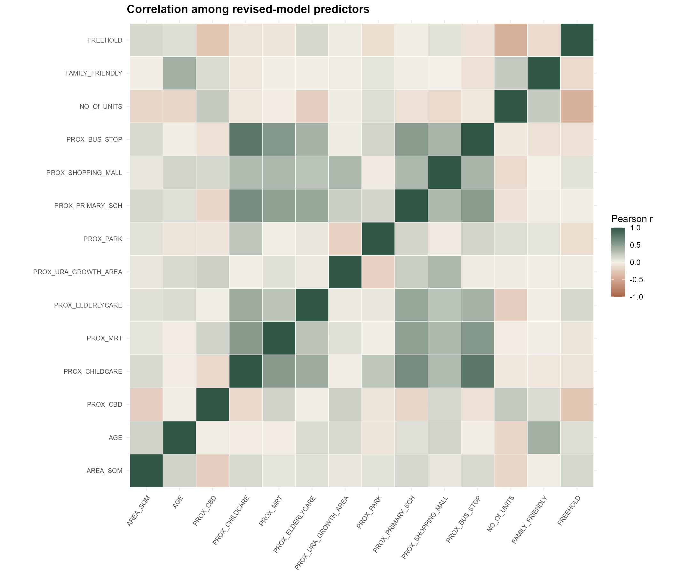
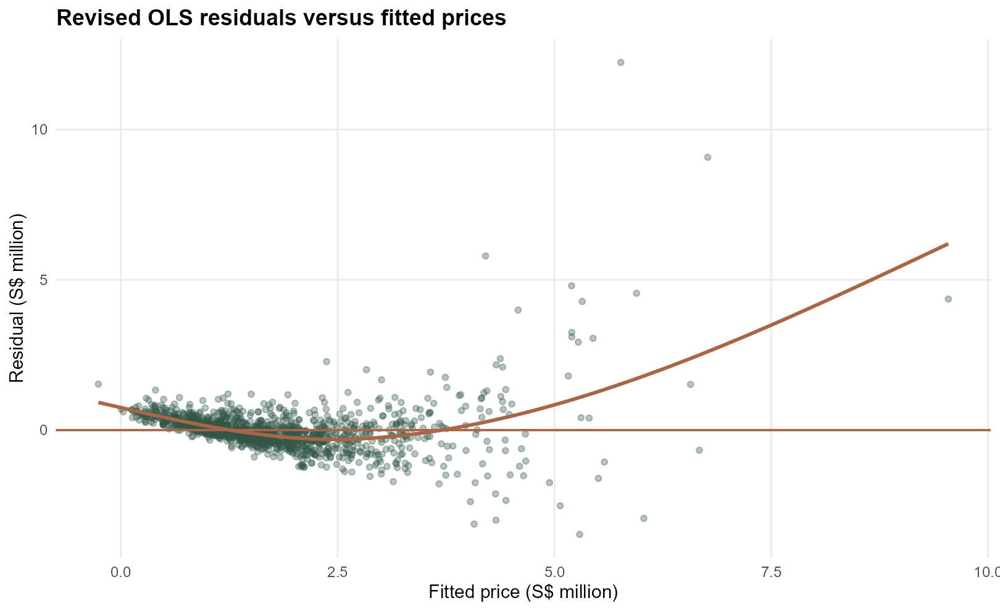
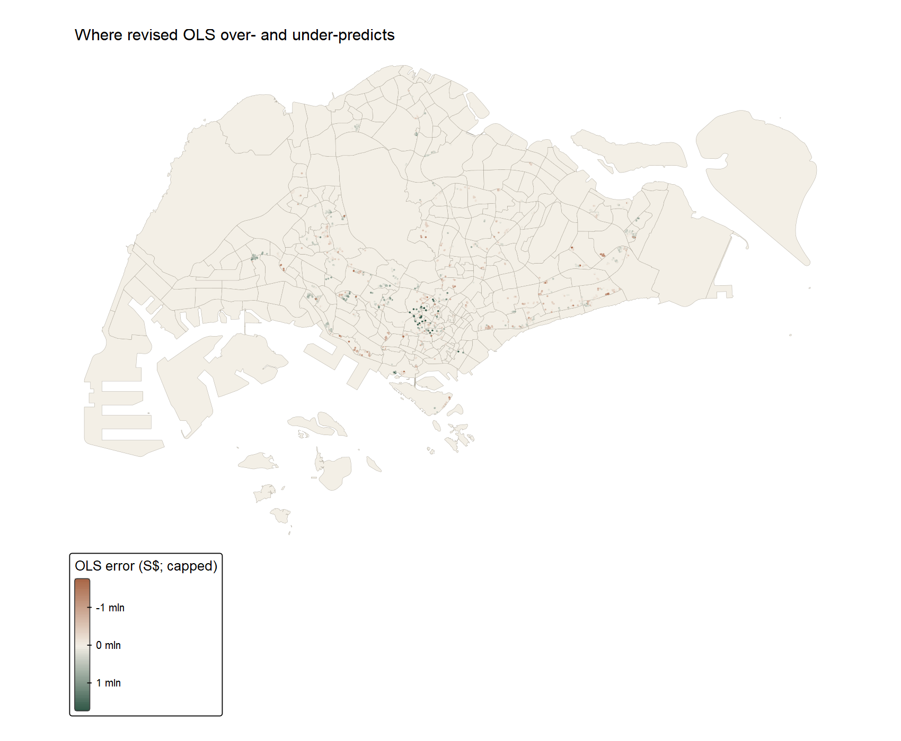
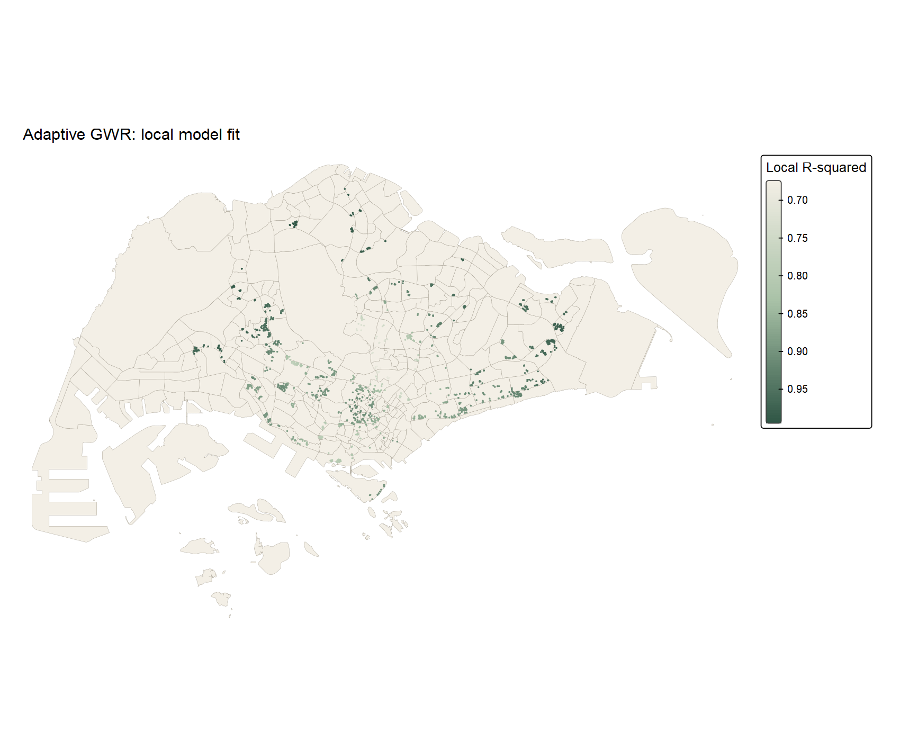
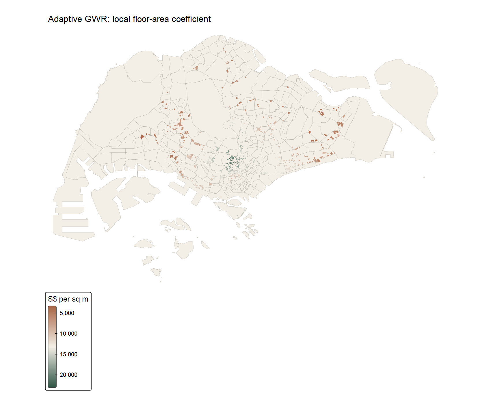

| Input check | Result |
|---|---|
| Condominium resale records | 1436 |
| Master Plan 2014 subzones | 323 |
| Invalid source subzone geometries repaired | 9 |
| Transactions outside the subzone union | 0 |
| Repeated transaction coordinates retained | 69 |
| Missing analysis values | 0 |
| Analysis CRS | EPSG:3414 (metres) |
| Outcome period | 2015 resale transactions |
Hands-on Exercise 9: Hedonic pricing across Singapore
Global and geographically weighted models of 2015 condominium resales
1 Aim and data
I followed the sequence in Chapter 13, Calibrating Hedonic Pricing Model for Private Highrise Property with GWR Method: prepare spatial and transaction data, inspect the outcome and predictors, fit global hedonic regressions, check their residuals, then compare fixed and adaptive geographically weighted regression (GWR). The practical question is whether one set of price coefficients describes the whole 2015 resale sample adequately.
The course-provided Hands-on_Ex09.zip contains 2015 condominium resale records and the Master Plan 2014 subzone shapefile. I used the archive found on the Desktop on 31 October 2026. It contains no data dictionary or redistribution permission, so I do not publish the raw files. The RStudio analysis script, data preparation script, reproduction guide, input audit and SHA-256 manifest let a reader check what was used.
The polygon file identifies its coordinate system as SVY21 but has no numeric EPSG identifier. After repairing nine invalid polygons, I transform it to EPSG:3414. The transaction longitude and latitude fields are WGS84 coordinates, which I transform from EPSG:4326 to the same metre-based system. All 1,436 records fall inside the subzone union. I retain the 69 records at repeated coordinates: they can represent separate sales at one property, and deleting them would change the transaction sample without evidence of duplication.
Show R code
subzones <- sf::st_read("data/geospatial/MP14_SUBZONE_WEB_PL.shp") |>
sf::st_make_valid() |>
sf::st_transform(3414)
condo <- readr::read_csv("data/aspatial/Condo_resale_2015.csv") |>
sf::st_as_sf(coords = c("LONGITUDE", "LATITUDE"), crs = 4326) |>
sf::st_transform(3414)The excerpt shows the core transformations; the running script supplies project-relative paths and validation checks.
2 Exploring prices and locations

The median sale is S$1,383,222, while the maximum is S$1.8e+07. This long upper tail matters for a level-price regression: a few very expensive homes can have disproportionate influence. I calculate a log-price field for exploratory checking, but keep the workbook’s level-price outcome for the main OLS–GWR comparison so the models remain on the same scale.


The transactions are concentrated in developed parts of the island rather than spread uniformly across all 323 subzones. An empty subzone on this map is not evidence of low prices; it may simply have no transaction in this dataset. The interactive version below allows closer inspection of the points.
3 From simple to multiple regression
The simple model relates sale price to floor area. The revised multiple model keeps the set of structural and proximity variables used in the chapter. I also fit the chapter’s broader initial model to show how the revision changes model fit. LEASEHOLD_99YR is not entered alongside the intercept and the other tenure indicators. I do not treat a small p-value as proof that a proximity measure causes a price change: location, building quality and buyer selection can confound the associations.
Show R code
simple <- lm(SELLING_PRICE ~ AREA_SQM, data = sf::st_drop_geometry(condo09))
revised <- lm(
SELLING_PRICE ~ AREA_SQM + AGE + PROX_CBD + PROX_CHILDCARE +
PROX_MRT + PROX_ELDERLYCARE + PROX_URA_GROWTH_AREA + PROX_PARK +
PROX_PRIMARY_SCH + PROX_SHOPPING_MALL + PROX_BUS_STOP +
NO_Of_UNITS + FAMILY_FRIENDLY + FREEHOLD,
data = sf::st_drop_geometry(condo09)
)| Model | Records | AICc | R<U+00B2> | In-sample RMSE (S$) |
|---|---|---|---|---|
| Simple OLS | 1436 | 43587.77 | 0.452 | 942005.6 |
| Full OLS | 1436 | 42970.77 | 0.652 | 750799.6 |
| Revised OLS | 1436 | 42967.14 | 0.651 | 751998.7 |
Floor area alone explains 45.2% of the sample price variation. The revised model explains 65.1%. Its floor-area coefficient is about S\(12,778 per additional square metre and its age coefficient is about S\)-24,688 per additional year, conditional on the other included fields. These are fitted sample associations, not isolated causal effects. The revised model has slightly lower AICc than the full one, even though its in-sample RMSE is marginally higher; adding variables can improve raw fit without sufficiently offsetting the complexity penalty.

The largest variance inflation factor in the revised model is 3.26. That does not remove all concern about local collinearity: GWR uses much smaller effective neighbourhoods than the global model, so its local coefficients can be less stable even when the global VIFs look moderate.
| Predictor | VIF |
|---|---|
| PROX_CHILDCARE | 3.26 |
| PROX_BUS_STOP | 2.85 |
| PROX_PRIMARY_SCH | 2.21 |
| PROX_MRT | 1.91 |
| PROX_CBD | 1.57 |
| PROX_ELDERLYCARE | 1.52 |
4 Diagnosing the global model

The residual plot shows a long positive tail and a pattern that the linear model does not fully absorb. I therefore treat its conventional coefficient tests cautiously. A log-price model is a useful alternative to explore, but it changes coefficient interpretation and cannot be compared with the level-price model by directly reading their AICc values.

For the map only, I cap residual colours symmetrically at the 98th percentile of absolute errors, about S$1,753,110. The regression and spatial test use the uncapped errors. Without this display cap, the S$12.2 million maximum positive residual would flatten nearly all other map colours.
Following the chapter, I define neighbours within 1,500 metres using projected coordinates and row-standardised weights. The graph has 10 disconnected components but no isolated transaction. I use 499 permutations and an explicitly two-sided, plus-one Monte Carlo comparison. Its smallest attainable p-value is 0.002, not zero.
Show R code
nb <- spdep::dnearneigh(sf::st_coordinates(condo), 0, 1500)
wt <- spdep::nb2listw(nb, style = "W", zero.policy = TRUE)
set.seed(20261031)
test <- spdep::moran.mc(residuals(revised), wt, nsim = 499,
alternative = "two.sided", zero.policy = TRUE)
# The running script computes a plus-one rank p-value from test$res.| Residual set | Moran’s I | Two-sided Monte Carlo p |
|---|---|---|
| Revised OLS | 0.144 | 0.002 |
| Adaptive GWR | -0.016 | 0.028 |
The revised OLS residual Moran’s I is 0.144 with p = 0.002. Nearby model errors are more similar than a random permutation would usually produce under this neighbour definition. This is evidence of remaining spatial structure, not proof that one specific omitted variable caused it.
5 Fixed and adaptive GWR
I use the same revised formula and same records for both local models. The chapter’s Gaussian kernel and leave-one-out cross-validation choose a fixed distance bandwidth of 971 metres and an adaptive bandwidth of 30 nearest observations. The latter grows its geographical reach where transactions are sparse and contracts in dense areas. Both distances are computed in EPSG:3414, so the fixed value is metres, not degrees.
Show R code
bw_fixed <- GWmodel::bw.gwr(revised_formula09, data = sf_sp09,
approach = "CV", kernel = "gaussian",
adaptive = FALSE, longlat = FALSE)
fixed <- GWmodel::gwr.basic(revised_formula09, data = sf_sp09,
bw = bw_fixed, kernel = "gaussian",
adaptive = FALSE, longlat = FALSE)
bw_adaptive <- GWmodel::bw.gwr(revised_formula09, data = sf_sp09,
approach = "CV", kernel = "gaussian",
adaptive = TRUE, longlat = FALSE)
adaptive <- GWmodel::gwr.basic(revised_formula09, data = sf_sp09,
bw = bw_adaptive, kernel = "gaussian",
adaptive = TRUE, longlat = FALSE)| Model | Records | AICc | R<U+00B2> | In-sample RMSE (S$) |
|---|---|---|---|---|
| Revised OLS | 1436 | 42967.14 | 0.651 | 751998.7 |
| Fixed GWR | 1436 | 42263.61 | 0.891 | 420080.2 |
| Adaptive GWR | 1436 | 41982.22 | 0.891 | 419595.5 |
The adaptive GWR has a lower AICc (4.1982^{4}) than both fixed GWR (4.2264^{4}) and revised OLS (4.2967^{4}). Its in-sample RMSE is about S$419,596, against S$751,999 for OLS. This is a substantial improvement in fit on the transactions used to calibrate the models. It is not an independent forecast test: flexible local regressions can fit the observed locations closely, and a new-place or future-sale assessment needs spatially separated validation.

The median local R² is 0.907, but the 10th and 90th percentiles range from 0.806 to 0.975. The map identifies where the model fits the 2015 observations differently. It does not mean the model is equally reliable at unobserved addresses.

The local floor-area coefficient stays positive in this fit. Its median is about S$7,782 per square metre, with a 10th–90th percentile range of roughly S$4,839–S$15,908. That variation is interesting, but I would check local condition numbers and coefficient uncertainty before treating individual points as precise local valuations.
The adaptive GWR residual Moran’s I is -0.016 with a two-sided permutation p of 0.028. Its magnitude is much smaller than the OLS residual value, but the test still detects a slight negative pattern at the 1.5 km scale. I would not describe the residuals as fully spatially independent.
6 What I learned
This exercise made the scale of a model comparison more concrete. Floor area is strongly associated with resale price, but it leaves much of the 2015 price variation unexplained. Adding the chapter’s structural and accessibility fields helps; allowing coefficients to vary over space improves the fitted model further. The local map also shows why a single global “price per square metre” can conceal variation across the observed market.
I also learned to separate a model’s fit from its evidential strength. The GWR bandwidth is selected from these same sales, and the local maps describe these same locations. The higher in-sample R² is not a promise of better predictions for a new development. Repeated coordinates, expensive outliers, disconnected neighbour components, and unknown construction of the proximity measures all limit interpretation. A next step would use spatially blocked holdouts, measured property attributes missing here, and a sensitivity analysis on the local bandwidth before making a valuation claim.
7 Sources
- R for Geospatial Data Science and Analytics, Chapter 13 — exercise sequence, model formulas and Gaussian GWR settings.
- Gollini et al. (2015), GWmodel: An R Package for Exploring Spatial Heterogeneity Using Geographically Weighted Models — GWR methods and implementation.
- Course-provided
Hands-on_Ex09.zip, accessed 31 October 2026 — 2015 resale CSV and Master Plan 2014 subzone boundary. Exact input hashes are recorded; the raw archive is not redistributed.